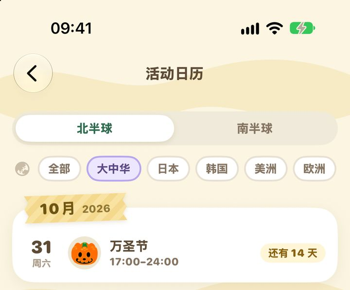
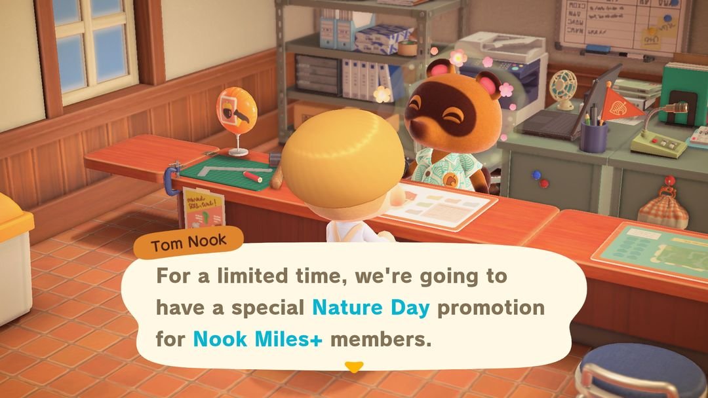

アースデー：4月15日〜22日に限定のちきゅうぎを注文しよう
「かっこいいちきゅうぎ」が注文できるのは毎年この8日間だけ。いけがきのDIYレシピはレイジから
アースデー（英語版では Nature Day）はとてもシンプルなイベントです。毎年4月15日〜22日、北半球も南半球も同じ期間に、たぬきショッピングに限定商品「かっこいいちきゅうぎ」（2,300ベル）が並びます。8日間のうち、どの日に注文してもOK。特に準備はいりません。
アースデーにゆかりのあるものとして、いけがきのDIYレシピもあります。こちらは植木屋のレイジからもらえて、レイジのお店で3日（別々の日）買い物をするともらえます。1年中いつでもOKです。ネットの古い攻略に書かれている「エコなマイレージをこなすとマイルが5倍」は発売直後の年だけの仕組みで、今はもうありません。最後に簡単にまとめておきます。
01開催期間
アースデーは毎年4月15日〜4月22日の固定です。北半球も南半球も同じで、イースターのように年によって日付が変わることもありません。
期間中、島に司会役のキャラクターは来ませんし、広場に飾りつけもないので、とても静か。うっかりすると気づかないまま過ぎてしまいます。ただ、ゲーム内で「たぬきショッピング 期間限定品ニュース」が届くので、ちきゅうぎの販売開始はそこでわかります。
02ちきゅうぎの注文のしかた
スマホのたぬきショッピングを開くか、案内所のタヌポートを使い、期間限定の欄を見ると並んでいます。
| アイテム | 価格 | 注文できる期間 |
| かっこいいちきゅうぎ | 2,300ベル | 4月15日〜22日 |
注文すると翌日ポストに届きます。4月22日を過ぎると、カタログからも注文できなくなります。ほしい場合はまた1年待つことになるので、期間中に忘れず注文しておきましょう。
かっこいいちきゅうぎは小物家具で、床に置くほか、テーブルや棚の上にも飾れます。タヌキ商店でふだん売っている「ちきゅうぎ」とは別のアイテムなので、まちがえないようにしましょう。
03いけがきのDIYレシピの入手方法
いけがきは、迷路を作るときによく使う緑の垣根です。材料はざっそう10、きのえだ5、いし2と、どれも島で簡単に拾えるものばかり。レシピの入手方法はひとつだけで、レイジのお店で、別々の日に3日買い物をするともらえます。1日に何個買っても1日分にしか数えられないので、1回に1つ買えば十分。3日に分けて通いましょう。
ヒント日付を忘れそうなら、あつ森 サークルの「イベントカレンダー」を見てみてください。北半球・南半球別に並んでいて、アースデーのようなたぬきショッピングの限定商品も載っています。

あつ森 サークルのイベントカレンダー（アプリの画面）
04ほかにちょっとしたこと
ちきゅうぎだけがほしいなら、4月15日〜22日のどの日に注文してもかまいません。初日にこだわる必要はありません。島の時間を変更している場合は、スマホ本体の日付ではなく、ゲーム内の日付で判定されます。
ちきゅうぎは売っても575ベルで、買値の4分の1です。飾る分を1つ注文すれば十分で、多めに買うと損をします。
アースデーが終わると、4月29日からはメーデーです。たぬきちが迷路の島へのツアーチケットをくれるので、時間を作って行ってみましょう。
05アップデートでの変化
発売直後の年（2020年）、アースデーは4月23日〜5月4日の「たぬきマイレージ＋」のイベントでした。毎日、緑の枠と若葉のアイコンがついたマイレージが追加され、その多くは木や花に関するもの（木の植え替え、花のタネを植える、住民に花をプレゼント、花かんむりを作る など）。達成するといつもの5倍のマイルがもらえ、最初の1つを達成してたぬきちに話しかけると、いけがきのDIYレシピがもらえました。
2021年のVer.1.9.0でこの仕組みはなくなり、今のたぬきショッピング限定商品の形になりました。かっこいいちきゅうぎもこのとき登場し、いけがきのレシピはレイジからもらう形に変わりました。マイル5倍は今はもう達成できず、島の時間を2020年に戻しても出てきません。Ver.2.0とVer.3.0での変更はありません。

2020年のアースデー：たぬきちが「たぬきマイレージ＋の期間限定イベント」を紹介（英語版の画面）（画像：Nookipedia）
あつ森 サークル · App Store で「あつ森 サークル」を検索